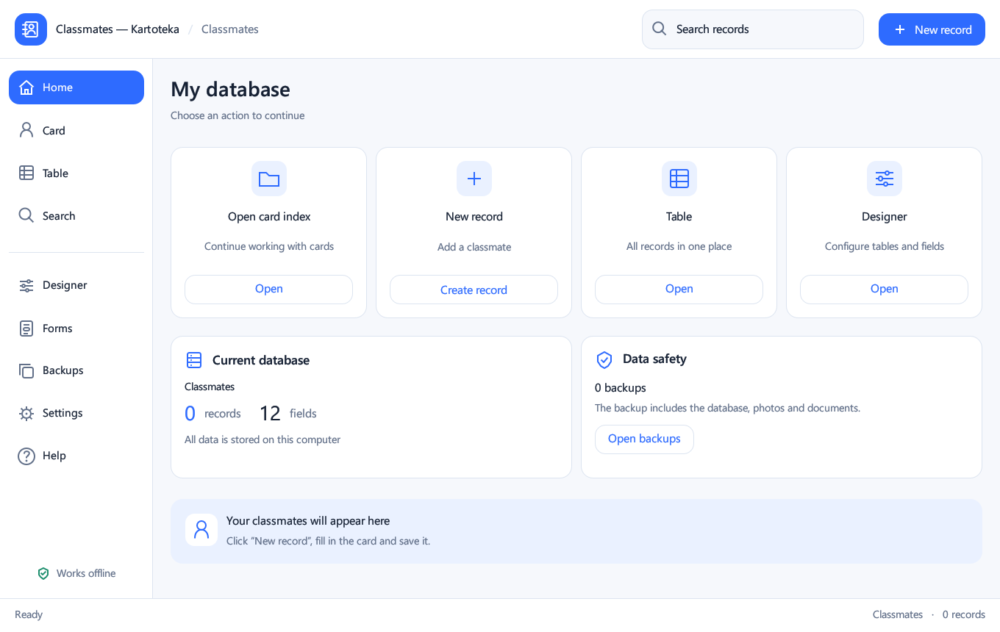

Record cards and a table with resizable columns.
WINDOWS · RU / DE / EN · 0.5.0
Your local card index for Windows
Keep classmates and other lists on your own computer. Cards, tables, custom fields, photos, documents, search and backups in one application.
Local data. No account. No mandatory internet connection.

Features
Custom tables and 11 field types: text, numbers, date, time, date/time, checkbox, URL, photo and document.
Photo previews, managed local document copies and website links.
Search across the selected table, loaded-row filtering and CSV export.
Back up the database and attachments; a safety copy is made before restoring.
Light theme, 80–150% scaling, collapsible menu and RU/DE/EN interface.
Install and start
Run Kartoteka-0.5.0-Setup.exe and keep the suggested user folder. Administrator rights and Rust are not required. Save your work and close the old application before updating. For a portable launch, extract the entire ZIP; keep the EXE and three DLL files together.
Requirements and limitations
Tested on Windows 11 x 64. The EXE is unsigned. The table shows up to 2,000 rows and search up to 500 results. Free-form layout editing and Microsoft Access import are not implemented. Windows DPI 125/150% and two monitors were not separately tested; font smoothing depends on the egui renderer. No telemetry; core features work offline.